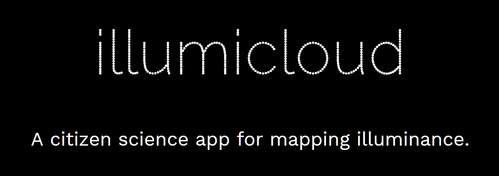
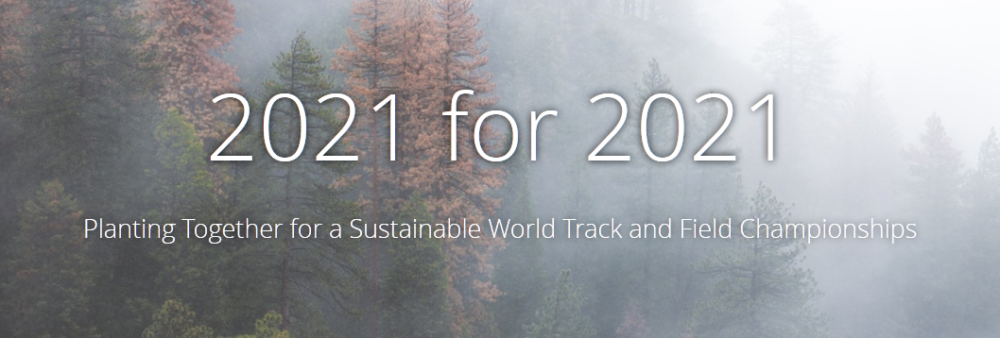

Eugene Urban Forest Analytics Dashboard
Independent Project
This is an ArcGIS Online Operations Dashboard I designed to analyze Eugene's Urban Forest using City of Eugene open data. Over the past decade, Public Works staff, interns and volunteers have been working to establish a baseline dataset of our street and park tree inventory. Using metrics of interest to the Urban Forestry team I designed this dashboard as something that would aid non-technical staff to obscure and automate more complex GIS concepts such as SQL queries, while ensuring the consistiency of statistics derived from the data. Users can watch progress and investigate trends using live data from the City of Eugene. Filter by park or neighborhood boundary, species, and condition, and more. (Requires ArcGIS Named User Account)
{kind=link}
{kind=link}
{kind=link}
Street Tree Inventory and Eugene's Urban Heat Island
City of Eugene
During my time working for the City of Eugene - Green Infrastructure, I provided GIS services for the Urban Forestry staff and interns working on the Street Tree Inventory, an endeavor which The City had been working on for over a decade. Field crews would catalog trees in the public right-of-way using an ArcGIS Collector app developed by the Parks and Open Space GIS staff. At the end of the contract, each neighborhood in the city had an initial canvassing and a dataset of over 60,000 right-of-way trees were described. As neighborhoods were marked off and an updated dataset was made available for offline analysis, I queried the dataset and separated the data by neighborhood so that other staff could analyze the data to determine statistics such as estimated site value, carbon sequestration, and species distribution. This included creating tools for use in ArcMap and scripts to chain analyses and iterate through multiple folders. In addition to preparing data for Urban Forestry staff I processed, visualized, and performed preliminary analysis on Urban Heat Island data gathered by the Sustaining Urban Places Research (SUPR) Lab at Portland State University. The data had been held on a local drive for some months, so I offered to forward it to the division's GIS department so that it could be integrated into The City's server for access across all divisions. This included preprocessing and performing map algebraon a raster dataset of over 12GB, including unit conversion, change detection, and zonal statistics. By overlaying UHI data, impervious surface layers, and the street tree inventory dataset, a relationship between hard and green infrastructure could be viewed.
{kind=link}
{kind=link}
{kind=link}
illumicloud
University of Oregon
illumicloudjs for Firefox 60.x on Android is a JavaScript web application prototype designed for the purpose of improving spatial and temporal resolution of lighting condition data. Data recorded within the app can be interpolated to create an illuminance surface raster. The data could find use in well-lit path analysis and other applications including solar panel placement, ecological footprint or canopy cover estimation. The user opens the app (by navigating to the site), and taps "Allow Location". From there, the user can click "Record" to begin logging points at a pre-determined interval. At each tick, the time, location and ambient light sensor reading (measured in lux) is attached to an id and a point is generated. As the user walks, their path is charted and illuminance levels for the duration are collected. When finished, the user can export the data points to a comma-separated-values file (.csv). As multiple routes are collected, they can be fed to an Arcpy script which aggregates the points into a point cloud shapefile for use in GIS software. By interpolating the points, you can generate rasters which hold illuminance data to inform nighttime lighting conditions or daytime shading.
{kind=link}
{kind=link}
2021 for 2021
University of Oregon, City of Eugene
This ArcGIS Online Story Map is an educational pamphlet for the citizens of Eugene to encourage participation in a tree planting initiative beginning in 2018. As part of a course taken in the UO College of Design, my team members and I workedwith Scott Altenhoff with City of Eugene Urban Forestry to educate and encourage community members to volunteer a planting site for one of 2021 Giant Sequoia the city plans to place throughout the city to offset the carbon emissions expected from the 2021 World Track and Field Championships. Using the Cascade Story template and two embedded story maps - Right Tree, Right Place using the Journal template, and Your Tree, Your Place using Crowdsource (Beta), we delivered a product which informed the reader of the environmental, economic, and social benefits of planting Giant Sequoia while conferring The City's commitment to "Right Tree, Right Place" when choosing a planting site. Additionally, the story map ended with a call to action, where the reader was able to upload a picture of their potential site, along with its geolocation, to serve as the framework for tracking planting sites for use in Eugene's street tree inventory. A portion of this presentation was used by the City of Eugene. When working as a temporary contractor I was given the opportunity to assist in the implementation of the data collection feature I envisioned within this project. I designed and communicated the data model for the web form that Parks and Open Space IT department developed for public submission of planting sites. The form is housed as an entry in the Public Works Service Request site.
View additional documents from miscellaneous assignments in this index directory.
© Theodore Lessman 2020